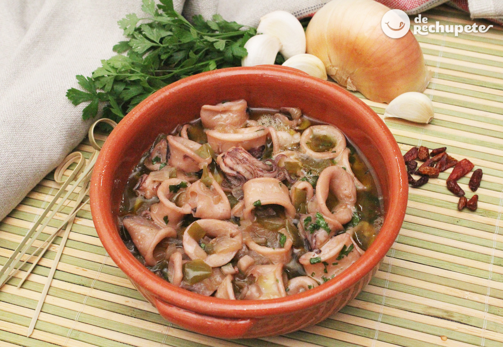

Chopitos Afogaos

Descripcion
Receta típica de las sidrerías asturianas y sobre todo de Gijón.
Donde se ha convertido en uno de los platos estrella de las cartas de estos locales de comida tradicional.
Ingredientes
- Chipirones
- Cebolla
- 3 dientes de ajo
- Cayena
- Pimiento verde italiano
- Vino blanco de calidad
- AOVE
- Ron
- Laurel, perejil fresco, sal
Pasos
- Limpiar bien chipirones y podemos dejar enteros o cortar en anillas, salamos y reservamos.
- Cortamos en trozos pequeño pimiento y cebolla, ajo en laminas y pochamos 15 min. Añadimos cayena y el laurel.
- Añadimos el ron y dejamos que evapore 3 minutos, agregamos el vino blanco y dejamos reducir unos 4 min.
- Agregamos los chipirones a la cazuela, subimos el fuego durante 1 min. y lo volvemos a bajar, para dejar cocer a fuego lento 25 min.
- Por ultimo, espolvoreamos perejil, emplatamos y a DISFRUTAR.